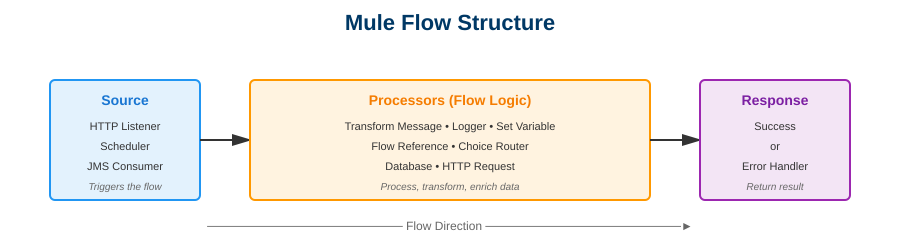

Day 3: Mule Application Structure
📚 Learning Objectives
- Understand the complete anatomy of a Mule project
- Learn about XML configuration and namespaces
- Master flows, sub-flows, and their differences
- Understand Maven project structure (pom.xml)
- Explore configuration files and their purposes
Estimated Time: 2 hours
Theory: 50% | Practical: 50%
📄 Understanding pom.xml (Maven Configuration)
What is Maven?
Maven is a build automation and dependency management tool. MuleSoft uses Maven to manage:
- Project dependencies (connectors, modules)
- Build process
- Versioning
- Packaging
Sample pom.xml Structure:
<?xml version="1.0" encoding="UTF-8"?>
<project xmlns="http://maven.apache.org/POM/4.0.0"
xmlns:xsi="http://www.w3.org/2001/XMLSchema-instance"
xsi:schemaLocation="http://maven.apache.org/POM/4.0.0
http://maven.apache.org/xsd/maven-4.0.0.xsd">
<modelVersion>4.0.0</modelVersion>
<!-- Project Coordinates -->
<groupId>com.mycompany</groupId>
<artifactId>my-mule-app</artifactId>
<version>1.0.0-SNAPSHOT</version>
<packaging>mule-application</packaging>
<name>my-mule-app</name>
<!-- Mule Version -->
<properties>
<mule.version>4.4.0</mule.version>
</properties>
<!-- Dependencies -->
<dependencies>
<!-- HTTP Connector -->
<dependency>
<groupId>org.mule.connectors</groupId>
<artifactId>mule-http-connector</artifactId>
<version>1.7.3</version>
<classifier>mule-plugin</classifier>
</dependency>
<!-- Sockets Connector -->
<dependency>
<groupId>org.mule.connectors</groupId>
<artifactId>mule-sockets-connector</artifactId>
<version>1.2.3</version>
<classifier>mule-plugin</classifier>
</dependency>
</dependencies>
<!-- Build Configuration -->
<build>
<plugins>
<plugin>
<groupId>org.mule.tools.maven</groupId>
<artifactId>mule-maven-plugin</artifactId>
<version>3.8.0</version>
</plugin>
</plugins>
</build>
</project>
Key Sections Explained:
| Section | Purpose | Example |
|---|---|---|
| groupId | Organization identifier | com.mycompany |
| artifactId | Project name | customer-api |
| version | Project version | 1.0.0-SNAPSHOT |
| dependencies | External libraries/connectors | HTTP, Database connectors |
| properties | Configuration variables | Mule runtime version |
🔀 Flows vs Sub-flows vs Private Flows

Mule Flow Components
Comparison Table:
| Feature | Flow | Sub-flow | Private Flow |
|---|---|---|---|
| Has Source | ✅ Yes | ❌ No | ❌ No |
| Error Handling | Own error handler | Inherits from caller | Own error handler |
| Scope | Public | Public | Private |
| Use Case | Entry point | Reusable logic | Internal reuse |
| Transactions | Can start | Shares with caller | Can start |
Example - Flow:
<!-- Public entry point with source -->
<flow name="main-flow">
<http:listener path="/api/customers"/>
<logger message="Main flow started"/>
<flow-ref name="process-customer-subflow"/>
</flow>
Example - Sub-flow:
<!-- Reusable logic, shares error handling -->
<sub-flow name="process-customer-subflow">
<logger message="Processing customer"/>
<set-variable variableName="timestamp" value="#[now()]"/>
<ee:transform>
<!-- DataWeave transformation -->
</ee:transform>
</sub-flow>
Example - Private Flow:
<!-- Private flow with own error handling -->
<flow name="private-validation-flow">
<logger message="Validating data"/>
<choice>
<when expression="#[payload.age > 18]">
<set-payload value="Valid"/>
</when>
<otherwise>
<raise-error type="VALIDATION:INVALID_AGE"/>
</otherwise>
</choice>
<error-handler>
<on-error-propagate type="VALIDATION:INVALID_AGE">
<logger message="Age validation failed"/>
</on-error-propagate>
</error-handler>
</flow>
Common Namespaces:
| Prefix | Namespace | Description |
|---|---|---|
| (none) | mule/core |
Core components (logger, set-payload) |
ee |
mule/ee/core |
Enterprise Edition (Transform) |
db |
mule/db |
Database connector |
file |
mule/file |
File connector |
🛠️ Hands-On Exercise: Explore Project Structure
Task 1: Create and Examine Project
- Create new Mule project:
project-structure-demo - Expand all folders in Package Explorer
- Open
pom.xmland identify: - Open
pom.xml - Add Database connector dependency:
- Save file
- Right-click project → Mule → Update Project Dependencies
- Check Mule Palette - Database should now appear!
- Open the main .xml file
- Switch to Configuration XML view
- Add this code:
- Switch to Message Flow view
- See the visual representation
- What is the purpose of pom.xml?
- Name three key differences between flows and sub-flows
- What folder contains Mule configuration XML files?
- What file controls logging configuration?
- What happens when you add a dependency to pom.xml?
- groupId
- artifactId
- version
- dependencies
Task 2: Add a Dependency Manually
<dependency>
<groupId>org.mule.connectors</groupId>
<artifactId>mule-db-connector</artifactId>
<version>1.14.0</version>
<classifier>mule-plugin</classifier>
</dependency>
Task 3: Create Multiple Flows
<flow name="main-entry-flow">
<scheduler doc:name="Scheduler">
<scheduling-strategy>
<fixed-frequency frequency="60000"/>
</scheduling-strategy>
</scheduler>
<logger level="INFO" message="Main flow triggered"/>
<flow-ref name="processing-subflow"/>
</flow>
<sub-flow name="processing-subflow">
<logger level="INFO" message="Sub-flow executing"/>
<set-payload value="Processed!"/>
</sub-flow>